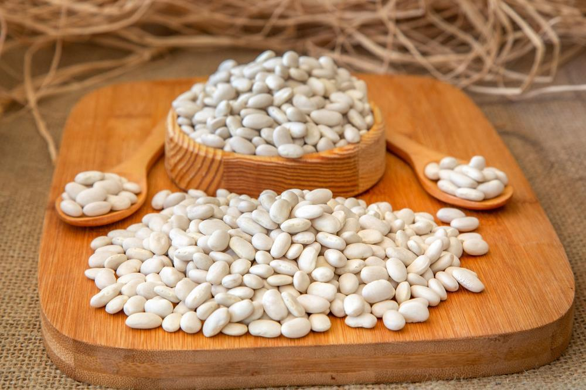

Kuru Fasulye
Wat is kuru fasulye?
Kuru fasulye (Turks voor witte bonen) is een van de nationale gerechten van Turkije. Het gerecht is een populair gerecht dat overal in het land gegeten wordt. Het is een warm, voedzaam gerecht dat makkelijk klaar te maken is! Er bestaan 2 varianten: etli kuru fasulye (met vlees) en etsiz kuru fasulye (zonder vlees). Combineer dit gerecht met pilav en turşu om de ervaring nog beter te maken!
 Beginner
Beginner- 90 min
 1.000 kcal
1.000 kcal
- Bonen
- Groenten
- Halal
- Mediterraan
- Vlees

Ingrediënten
4 Personen
- 400 g - Witte bonen
- 2 el - Olijfolie
- 300 g - Kalfsvlees
- 1 - Ui
- 1 - Tomaat
- 1 - Paprika
- 1 el - Tomatenpurree
- 1 el - Paprikapurree
- 1 tl - Zout
- 1 tl - Zwarte peper
- 1 tl - Komijn
Bereidingswijze
- Week eerst de witte bonen een dag in koud water. Gebruik 800ml water en voeg zout toe.
 De volgende dag, spoel de bonen af en kook de bonen voor een uur totdat ze net gaar zijn.
De volgende dag, spoel de bonen af en kook de bonen voor een uur totdat ze net gaar zijn.- Pak een snelkookpan, voeg olijfolie toe en zet hem op hoog vuur.
- Voeg 300g kalfsvlees toe en bak totdat ze gebraden zijn.
- Daarna, zet de pan op laag tempratuur en voeg de ui toe.
- Voeg de tomaat, paprika, tomaten- en paprikapuree toe en meng het goed door.
- Wacht een paar minuten en voeg water toe.
- Voeg de voorgebakken bonen.
- Voeg zout, zwarte peper en komijn toe.
- Doe de deksel op de pan en kook het voor een uur totdat de bonen en vlees zacht zijn. Zorg ervoor dat je elke 20 tot 30 minuten checkt.
Tips!
- Gebruik bij het weken voor water 2x de hoeveelheid van de witte bonen.
- Voeg bij het weken carbonaat toe. Dit maakt de bonen zachter.
- Bij het koken van de bonen, zorg ervoor dat je het schuim weghaalt om maagzuur te voorkomen.
- Gebruik een snelkookpan om het kookproces sneller te maken.
- Komijn toevoegen helpt bij het verteren van de witte bonen.
Voedingwaardes
- Calorieën: 1253 kcal
- Vet: 56g
- Eiwit: 93g
- Koolhydraat: 72g
- Waarvan suikers: 12g
- Vezels: 46g
- Cholesterol: 216mg
Algemeen
- Vitamine A: 0,21mg
- Vitamine B1: 1,1mg
- Vitamine B2: 0,44mg
- Vitamine B3: 0mg
- Vitamine B6: 1,47mg
- Vitamine B11: 66,5µg
- Vitamine B12: 0mg
- Vitamine C: 146,45mg
- Vitamine D: 0,7µg
- Vitamine E: 0,33mg
- Vitamine K: 4,88µg
Vitamines
- Natrium: 462,82mg
- Kalium: 3709,05mg
- Calcium: 236,2mg
- Fosfor: 667,1mg
- Ijzer: 495,82mg
- Magnesium: 229mg
- Koper: 1,76mg
- Zink: 18,62mg
- Seleen: 0μg